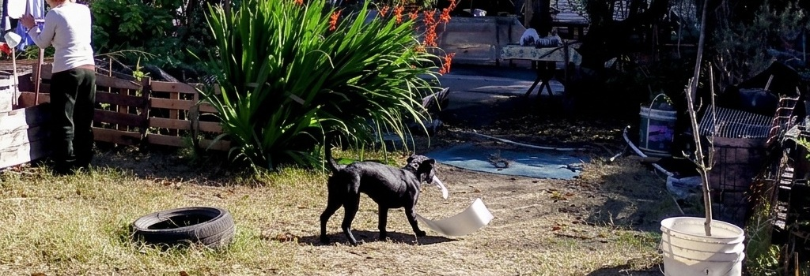
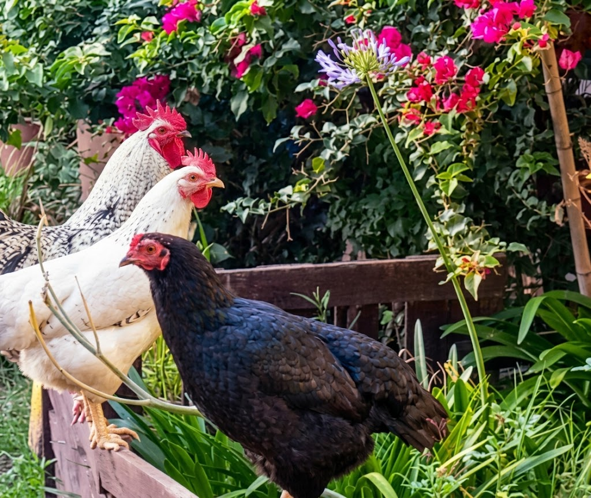

Nuestros rescates




La huerta también es un lugar de cuidado y refugio para los animales. Viven gatos que alimentamos, acompañamos y les damos un lugar donde quedarse hasta que logren conseguir un hogar fijo (en el caso ideal, a veces no conseguimos adoptante o son salvajes y no pueden adoptarse).
A lo largo del tiempo también pasó por la huerta un perro, y gallinas que formaron parte del espacio.